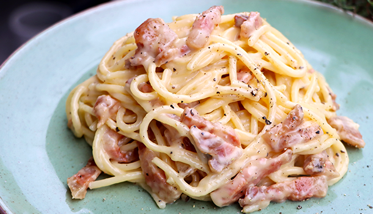

Home
Spaghetti Carbonara

Description
Simple yet irresistibly creamy, spaghetti carbonara is a classic Italian favorite. With just a handful
of ingredients – pasta, savory cured pork, eggs, cheese, and black pepper – you can create a delicious
dish that’s quick enough for weeknights and elegant enough to impress guests. Enjoy authentic carbonara
with every bite!
Ingredients
- 400g (14oz) spaghetti
- 150g (5oz) guanciale, pancetta, or streaky bacon
- 2 large eggs
- 2 large egg yolks
- 80g (¾ cup) freshly grated Parmesan or Pecorino Romano
- Salt and black pepper, to taste
- (Optional) 2 cloves garlic, minced
- (Optional) 2 tbsp chopped fresh parsley
Steps
-
Bring a large pot of salted water to a boil. Add spaghetti and cook until al dente according to the
package instructions. Reserve one cup of pasta water, then drain.
-
While the pasta cooks, cut guanciale (or pancetta/bacon) into small pieces. Cook in a large skillet
over medium heat until golden and crispy. (Add minced garlic for extra flavor in the last minute, if
using.)
-
In a large bowl, whisk together eggs, egg yolks, most of the cheese (reserve some for topping), a
pinch of salt, and plenty of black pepper.
-
Add hot, drained spaghetti directly to the pan with guanciale, tossing to coat well in the rendered fat.
-
Remove from heat. Immediately pour in the egg mixture and quickly toss with the pasta, adding reserved
pasta water a little at a time as needed to create a creamy sauce that coats the strands.
-
Serve immediately, topped with remaining cheese, black pepper, and parsley if desired.